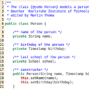
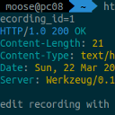

Talking with Daemons |
Talking with Daemons |
Analyzing PyPI Data - 2 |
|  |
Languages for Back Ends |
Python Markov Chain Packages |
Python Code Documentation |
Python ctypes |
The Rust Programming Language |
|  |
HTTPie |
Python and Encodings |
Reading and Writing Files with Python |